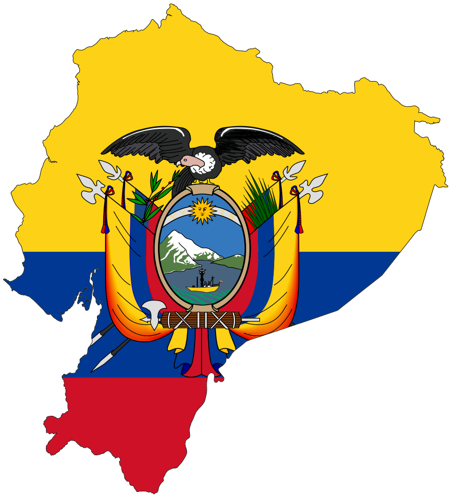
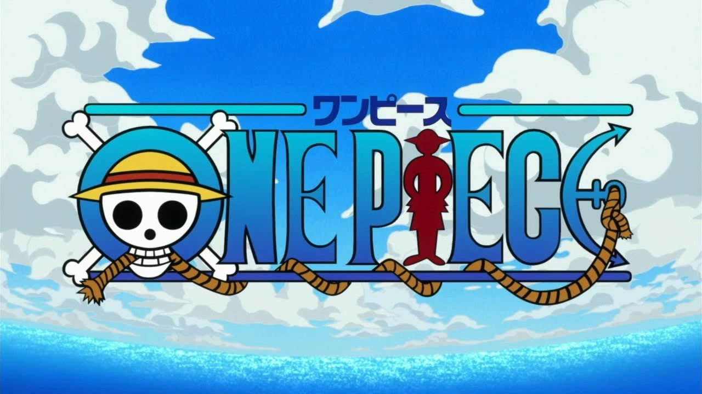
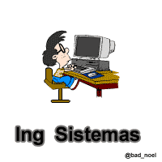

Presentación
Mi nombre completo es Juan Francisco Chanatasig Garzón. Te doy la bienvenida a esta sección aqui puedes conocer mas sobre mi vida personal. 😎
De donde soy:

Naci en Quito, Ecuador el 14 de mayo del 2003. Aunque naci en Quito, me crie en la ciudad de Latacunga durante toda mi vida. Actualmente soy estuadiante de sexto semestre de la carrera de Ingeniería de Software en la Escuela Politécnica Nacional en Quito, Ecuador. Soy entusiasta de la tecnologia y la ciencia me gusta aprender cosas nuevas cada dia. Me considero una persona amigable, responsable, comprometida con mis objetivos y valores como la honestidad, el respeto y la empatía. No soy muy sociable pero cuando me siento comodo con las personas puedo ser muy amigable y divertido.
Hobbies:
Me apasiona el mundo del software y la programacion, pero mis hobbies tambien incluyen los videojuegos, el anime y el manga. 🍜
Si me preguntas por mi videojuego favorito, es Hollow Knight, no tengo un anime favorito, pero actualmente estoy muy pendiente de One Piece.
|
 |

|
 |